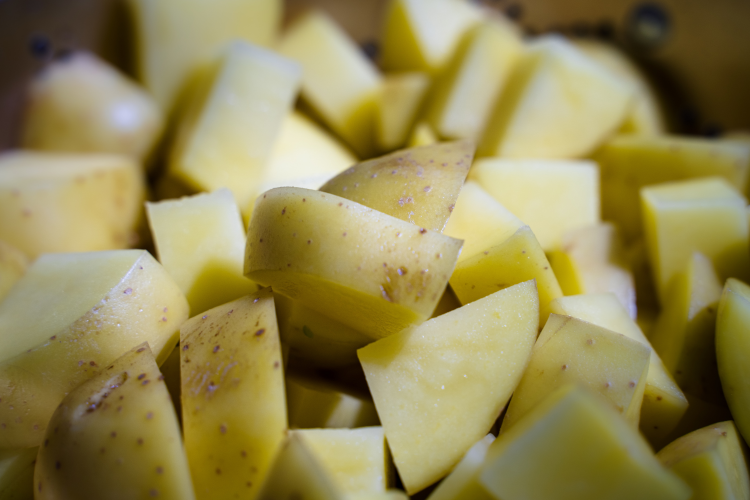

Boiled Potatoes

Photo by Gilberto Olimpio on Unsplash
Description
Not my favorite of the ways to make potatoes, but boiling is a right sight better than anything Gollum would have done with them
Ingredients
- 1.5 lbs small new potatoes
- 1 Tbsp salt
- 2 Tbsp unsalted butter, melted
- 2 Tbsp extra virgin olive oil
- 1 tsp kosher salt
- .5 tsp black pepper
- 2 Tbsp chopped parsley
Instructions
- Wash potatoes and cut into halves or quarters so each piece is roughly the same size
- Place potatoes in a pot of water with 1 Tbsp of sale and cover with an inch of water. Bring to a boil, then reduce heat and simmer until potatoes are fork tender (approx. 10 - 18 minutes)
- Drain potatoes and return to the pot or a mixing bowl
- Drizzle melted butter and olive oil over potatoes
- Season to taste with kosher salt and black pepper
- Garnish with parsley and toss to combine
Recipe written by Natasha's Kitchen